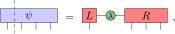
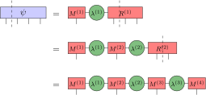
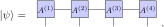
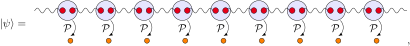
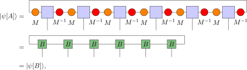
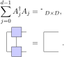
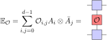
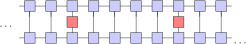

6. Matrix Product States#
Matrix Product States
MPS as a polynomial Ansatz
entanglement and area laws
gauge freedom
expectation values
correlators
6.1. Introduction#
Consider a quantum system of \(N\) particles, where each particle can be in in \(d\) different states (we call this a system of qudits). The total Hilbert space is of this system is spanned by \(d^N\) basis states. This means that if we want to track all possible states of our system, we need to track an exponential amount of states. This is called the dimensionality curse and is one of the prime reasons why studying systems with many particles is difficult. To circumvent this problem we can only consider a small corner of the full Hilbert space and hope that the essential physics of our system is represented by this small corner. One such small corner is parametrized by matrix product states (MPS), which has been succesful in describing the physics of many different interacting quantum systems.
6.2. Matrix product states through succesive SVD#
We can represent every basis state of our \(N\) qudit Hilbert space as \(\ket{s_1s_2...s_N}\), where \(s_i\in \{0,...,d-1\}\). To specify a general quantum state can be expressed as a linear combination of these basis states. We can write
So for a general state we need the values of all the different \(C_{s_1,s_2,...,s_N}\), hence we need to track \(d^N\) complex numbers. Let us perform some tricks to handle this exponential number of coefficients. First we are going to isolate the first index by interpreting the coefficients as a \(d\) by \(d^{N-1}\) matrix. Next we can write this matrix as
where \(U\) is a \(d\) by \(D\) matrix and \(C'\) is a \(D\) by \(d^{N-1}\) matrix. One can find such a matrix by performing an Singular-Value-Decomposition (SVD) on the original matrix \(C\). A SVD decomposes the original matrix \(C\) as \(U\Sigma V^\dagger\) with \(U\) and \(V\) unitaries and \(\Sigma\) a diagonal matrix containing the singular values of \(C\). \(\Sigma\) will be a \(d\) by \(d^{N-1}\) matrix with rank(\(C\)) non-zero elements. One can then define \(C'\) as \(\Sigma V^\dagger\).
So far it seems that we made things worse, we now need to store \(d^2\) elements of \(U\) and \(d^N\) elements of \(C'\). We can make things better by making a low rank approximation of the state instead of representing the full state. This low rank approximation can be made by truncating \(\Sigma\) by only retaining the largest \(D\) singular values. This truncates \(C'\) to a \(D\) by \(d^{N-1}\) matrix. \(D\) is called the bond dimension and increasing \(D\) will give you a better approximation of the original state.
By isolating the first index of our original tensor \(C\) and by performing an SVD and truncating, we have gained a low rank approximation of the original tensor \(C\). Now we can use the same trick on index 2. We can do this by writing
The above equation is an equality if \(D = {\rm rank}(C)\), but again we are free to choose a lower bond dimension to make an approximation of \(C\). By performing succesive SVD’s we decompose/approximate our original tensor \(C\) as a “product of matrices”. We hence write
Notice that our original state is now given by a contraction of \(N\) three leg tensors. A state that can be written in this way is called a matrix product state. In principle any state can be written as a MPS, but one would need a large bond dimensions for an arbitray state. The true power lies in using MPS as a variational ansatz. One can fix the bond dimension \(D\) and find the optimal MPS within this subspace. Furthermore many systems are translationally invariant meaning that one can use the same tensor \(U\) on every site, which gives a huge compression of information.
6.3. Matrix product states through projected entangled pairs#
Another approach to construct a MPS is by using projected entangled pairs. Consider a chain with \(N\) sites. On every site we place 2 qudits, giving us a local Hilbert space of \(\mathbb{C}^D\otimes\mathbb{C}^D\) on each site. Now we maximally entangle each qudit with the nearest qubit on a neighbouring site. We have now a chain of entangled pairs, where the full quantum state of the chain is given by
Next we construct a map \(f: \mathbb{C}^D \otimes \mathbb{C}^D \xrightarrow \mathbb{C}^d\) acting on a local site. This map projects the \(D^2\)-dimensional “virtual” Hilbert space onto a “physical” \(d\)-dimensional Hilbert space. Acting with \(f\) on each site gives a \(d\)-dimensional quantum chain with entanglement shared between neighbouring sites. Since the state is fully determined by the map \(f\), which can be represented as a \(D\) by \(d\) by \(D\) three leg tensor it is clear that this construction indeed gives rise to a MPS. One advantage of this construction is that it allows for easy generalization to higher dimensions.
6.4. Entanglement of Matrix product states#
One important question is which states can be represented by an MPS and what are their properties. To answer this question we will look at the entanglement structure of a MPS. Consider a MPS with a fixed bond dimension \(D\). We can choose any bond of the MPS to make a bipartition of the MPS, where all sites to the left of the bond are in one partition and all sites to the right of the partition are in the other partition. One can now calculate the entanglement entropy \(S\) between these two partitions. To calculate this we will use the SVD decomposition. If we perform an SVD along the bond, then the singular values will completely determine the entanglement structure between the two partitions. The entanglement entropy is then given by
Each bond we cut to make the bipartition will contribute to the total entanglement entropy. To bipartition a MPS we only need to cross one bond giving us a constant \(S\). In higher dimensional systems the amount of bonds that you need to cross to bipartition the system will scale with the area of the partition, hence the entanglement entropy also scales with the area. This is scaling relation is called an area law. This leads us to the following statement: “Any state with an area law for the entanglement entropy can be arbitrarily good approximated by an MPS wiht poly\((N)\) bond dimension.”. The small corner that MPS parametrizes is thus given by the weakly entangled states that are governed by an area law. This seems very restrictive however it appears that many of the relevant states for different physical systems fall within this class.
6.5. Gauge freedom of MPS#
Not all MPS describe different physical states. One can perform a set of transofrmations on a MPS to get a different MPS, but with the physical state unchanged. These transformations are called gauge transformations. When describing a physical state by a MPS, one is free to choose its specific representation. This freedom is called a gauge freedom. The gauge transforms that leave a MPS invariant are given by basis transforms on the virtual level. If one starts with a MPS given by the tensors \(U_{k,s_i,l}\), one can get an equivalent MPS described by tensors \(V_{m,s_i,n}=\sum_{k,l} B_{m,k}U_{k,s_i,l}B^{-1}_{l,n}\), where \(B\) describes a basis transform.
A physical state can be described by many different MPS by using the gauge freedom. One can wonder if the same state can be described by two MPS that are not related by a gauge transform. This question is answered by the fundamental theorem of MPS, which states that any two translationally invariant MPS are equal if and only if their tensors are related by a gauge transform. So the gauge freedom is the only freedom we have in describing a physical state by an MPS.
This gauge transform can be exploited in various algorithms by defining canoncial forms. One common canonical form is the left-canonical form given by the condition \(\sum_{s_i=0}^{d-1}U^\dagger_{s_i}U_{s_i} = \textbf{id}_{D\times D}\).
6.6. Expectation values of Matrix product states#
It is important to know how to compute expectation values of operators acting on a MPS. Consider an operator \(O_i\) acting on site i of a state given by a MPS \(\ket{\psi[U]}\). To calculate this expectation value we introduce the object
We call this the \(O\)-transfer matrix. In the case of \(O=\textbf{id}\) we refer to it as the transfer matrix. The transfer matrix allows us to easily represent the expectation value \(\braket{\psi|O_iO_j|\psi}\). For a finite MPS with periodic boundary one can calculate this as
This shows another powerful aspect of MPS, namely expectation values of MPS are easy to calculate.
6.7. Correlation functions of Matrix product states.#
The method to calculate expectation values can be easily generalized to calculate two point correlators of a MPS. Consider two operators \(O_i\) and \(Q_j\) each acting on respectively site \(i\) and \(j\). The correlator between these two operators is denoted by \(\braket{\psi|O_iQ_j|\psi}\). By using the transfer matrix we can easily calculate this correlator as
If we work in the thermodynamic limit we get
Here it is clear that the dependence of this correlator on \(i\) and \(j\) comes only from \(\mathbb{E}^{j-i-1}\), which is controlled by the eigenvalues of \(\mathbb{E}\). One can always normalize the state \(\ket{\psi}\) such that the dominant eigenvalue of \(\mathbb{E}\) is 1 and the others lie within the unit disk. This means that the exponential dependence on the eigenvalue corresponds to an exponential decay, hence the correlator of an MPS always has exponentially decaying correlations. This is a very important property of MPS, because it shows for which systems the groundstate can be well approximated by a MPS. For gapped systems it is well-known that the correlations decay exponentially, hence all gapped groundstates can be well approximated by a MPS. However gapless systems, which have power law decay for correlations, cannot be fully captured by MPS.
